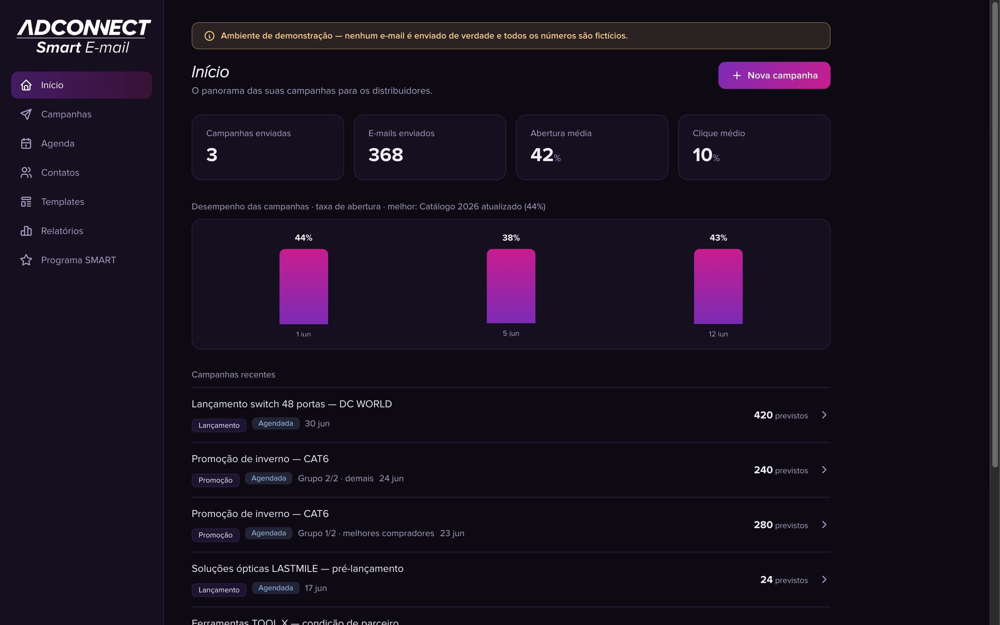
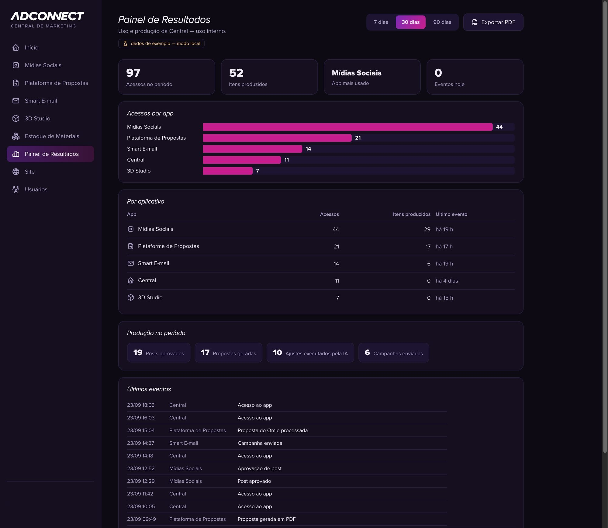
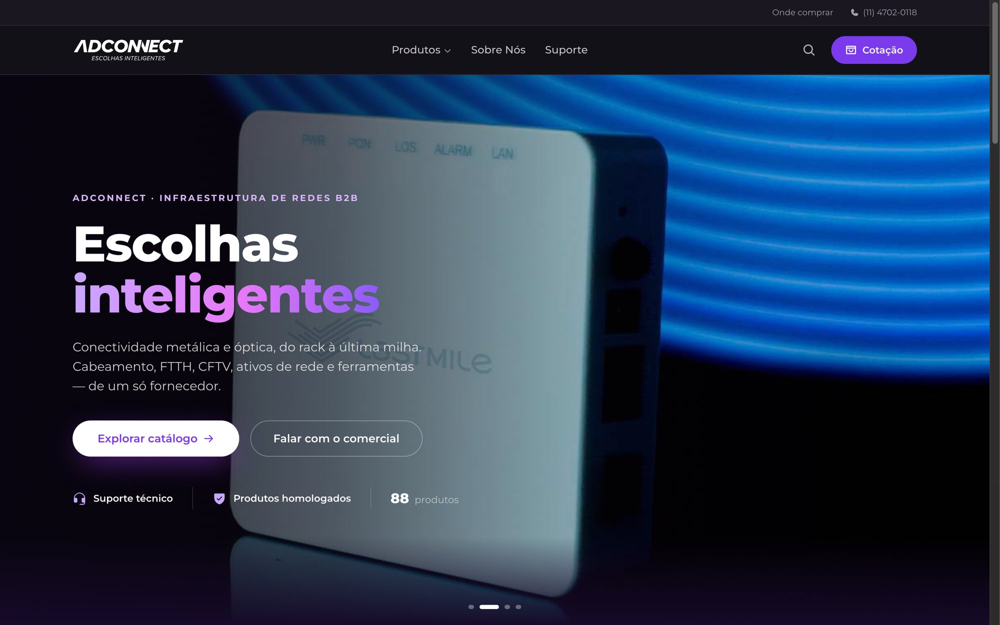
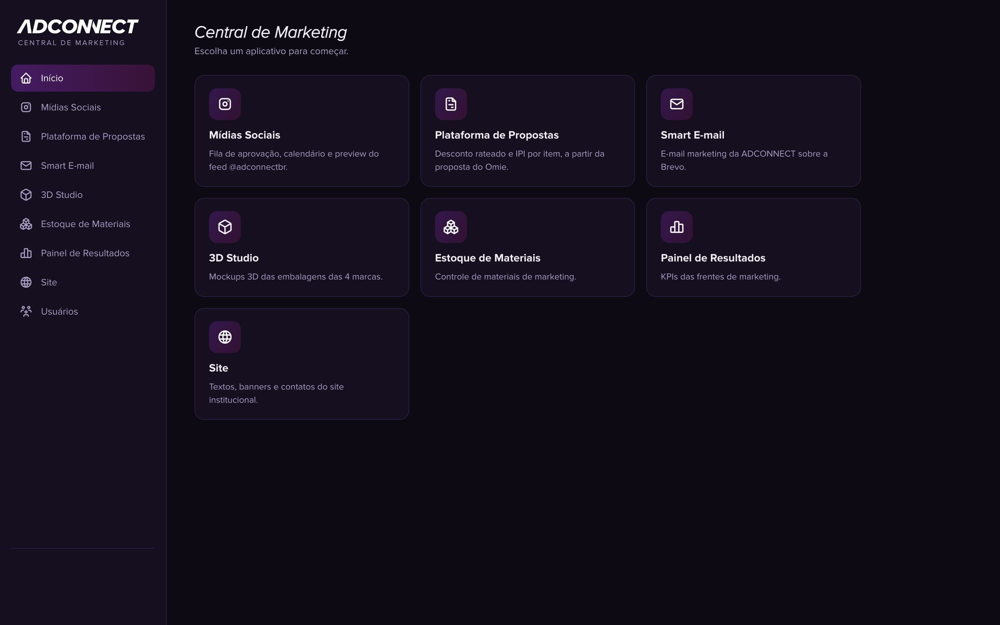

Growth Marketing Portfolio
Five years in B2B technology marketing, working hands-on across paid, email and events. This page shows real tools and campaigns I built at Adconnect, a B2B network infrastructure manufacturer, from nurture flows to the dashboards I use to spot what is underperforming.
São Paulo, Brazil LinkedIn profile
Channels I run hands-on: Google AdsLinkedIn AdsMeta AdsEmail & nurtureTrade fairs
Email & nurture
I built this tool on the Brevo API to bring launches, promotions and loyalty-program emails into one place: campaigns, a scheduling calendar, contact segments, templates and reports. It is designed to replace RD Station and keep our contact data in-house.

Performance & tracking
Access, output and AI-assisted adjustments across our marketing tools, with 7, 30 and 90-day views and a live event log. I use this kind of view to flag what is underperforming before it becomes a problem.

Website & conversion
An 88-product catalog with a PDF spec sheet per item and two conversion paths: quote request and direct WhatsApp contact with the sales team.

AI-enabled execution
One login with role-based access to every tool the team uses: social approvals, a proposal generator, Smart E-mail, a 3D packaging studio, marketing stock and the results dashboard. AI is how I ship this much with a two-person marketing team, not a replacement for the marketing thinking.
